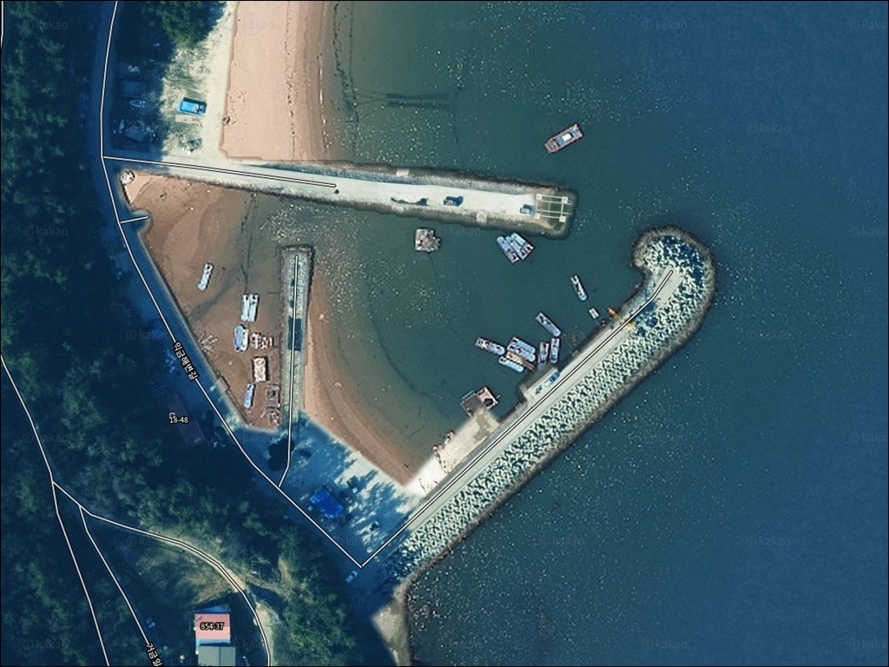
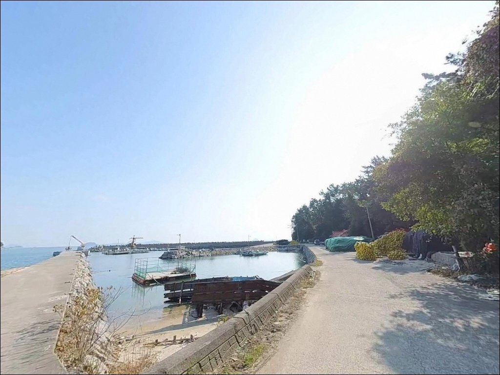
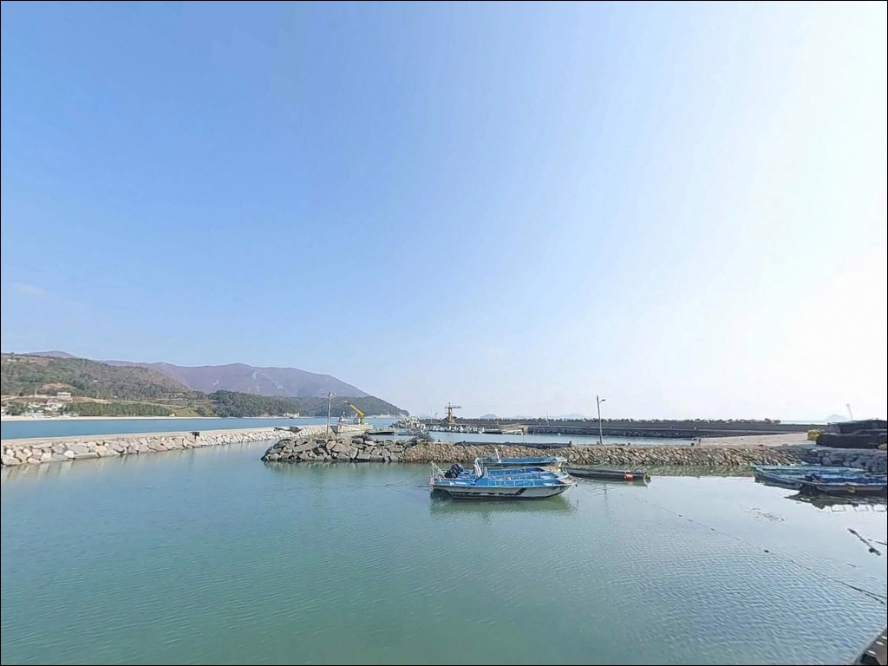
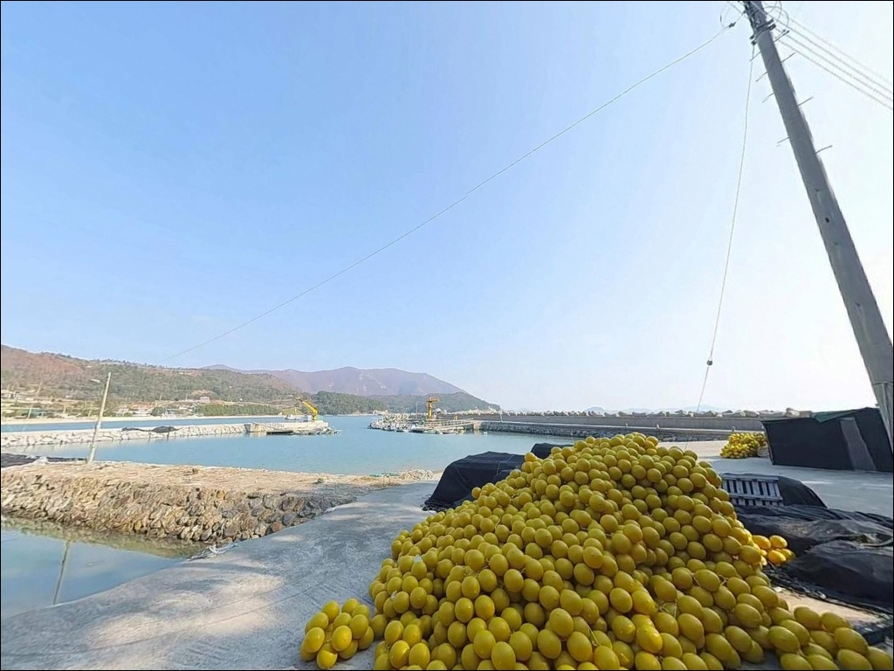
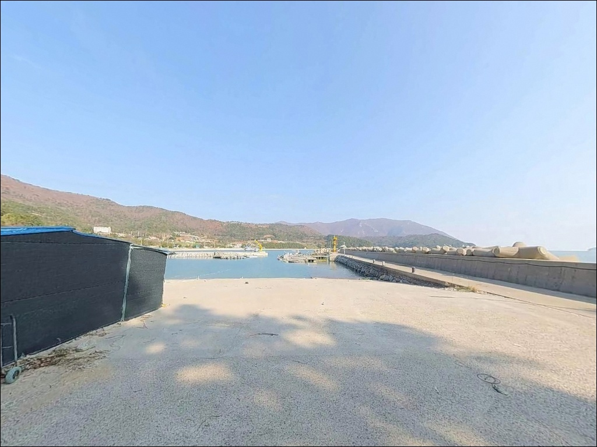
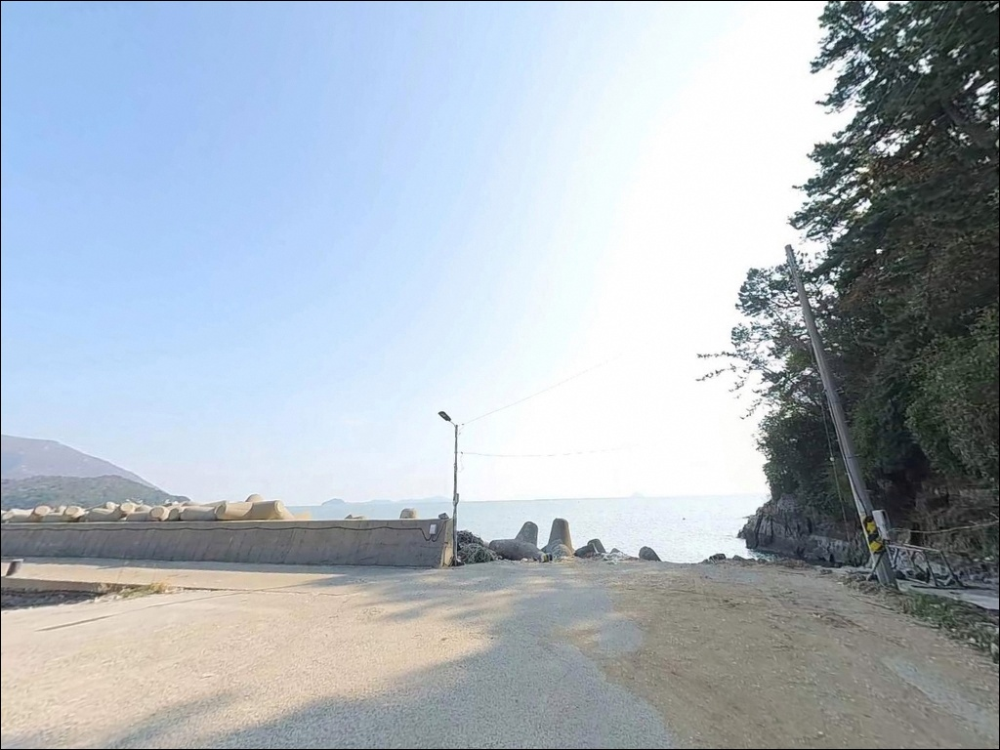
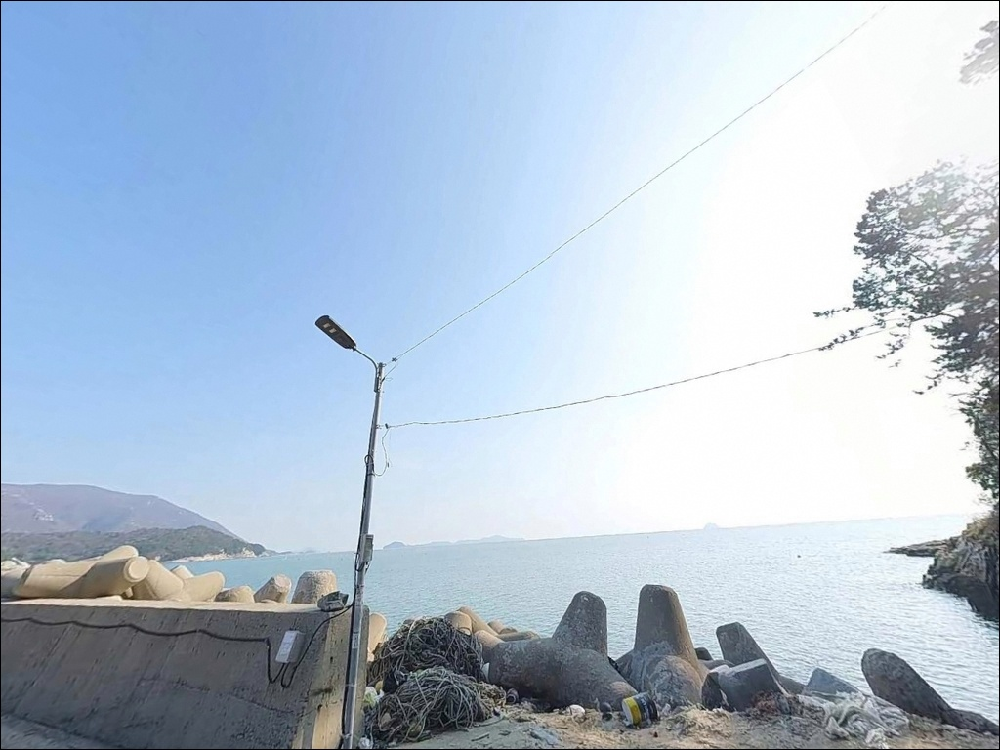
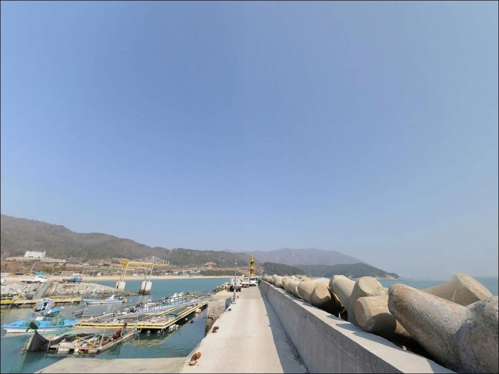
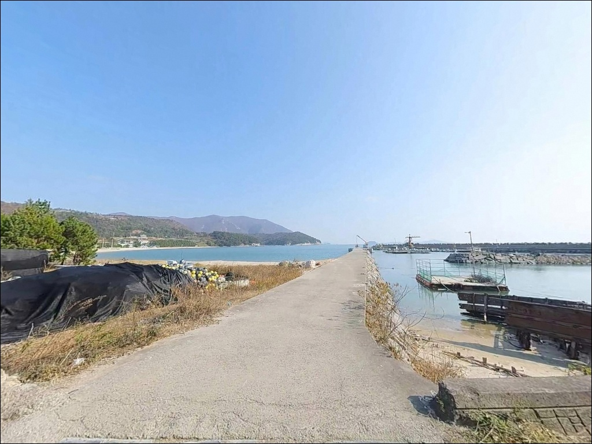

내항은 뻘 바닥인 거금도 익금방파제, 외항 15m 수중여에서 확인한 감성돔 입질
이 페이지에는 광고(제휴 링크 포함)가 있으며, 광고 링크를 통해 구매하면 운영자가 판매 수익 또는 수수료를 받을 수 있습니다. 포인트 사진: 카카오맵 스카이뷰·로드뷰. 이 페이지의 지도·사진 이미지는 카카오맵의 실제 서비스 이미지와 다를 수 있습니다.


포인트 안내
익금방파제(익금선착장)
전남 고흥군 금산면 어전리 산 254-21
익금방파제 내항에 자리를 잡으면
조과를 기대하기 어렵습니다.
내항 바닥이 뻘 지형으로 어종이 머물기 어려운 구조이며,
외항 테트라포트 전방 15m 이내가
이 방파제의 실제 포인트 구간입니다.
처음 찾는 낚시인이 내항 쪽에 채비를 펼치는 경우가 적지 않습니다.
방파제 구조를 사전에 파악하지 않고 진입하면
자리만 차지하고 빈손으로 돌아오는 상황이 생깁니다.
이 글은 익금방파제의
외항 지형 구조, 진입 환경, 물때 판단 기준,
낚시 방식별 공략 조건에 집중합니다.
조황 단정이나 특정 어종 보장은
이 글의 범위에 포함되지 않습니다.

1. 진입 동선과 포인트 접근성
거금도는 소록도와 거금대교로 연결되어 있어
육로 접근이 가능합니다.
본토에서 출발한다면 녹동항 방면에서
소록대교와 거금대교를 순서대로 건넌 뒤
거금일주로를 따라 남쪽 어전리 방면으로 내려오는 경로입니다.
익금해수욕장 안내소 옆으로 방파제 방향 진입로가 이어지는데,
이 구간이 폭 약 2.5m 수준의 비포장 협로입니다.
차량 1대 통행은 가능하지만 회차가 어려운 구조로,
대형 SUV나 캠핑카 진입 전에는
위성지도로 도로 조건을 반드시 확인해야 합니다.
진입로 폭이 2.5m 수준인 구간이 포함되어 있어,
대형 차량은 출발 전 위성지도로 도로 조건을 반드시 확인해야 합니다.
주차는 방파제 입구 앞 콘크리트 면(3~4대 수용)을
활용하는 것이 일반적입니다.
추가로 익금해수욕장 안내소 인근 도로변도
2~3대 정도 주차가 가능하지만
주변 민가와 접한 공간이므로
통행 동선을 막지 않는 자리가 우선입니다.

2. 차박 환경과 야간 체류 여건
어전리 일대는 민가 밀집도가 낮은 어촌 마을 분위기입니다.
야간 차량 통행이 드물고
주변이 조용한 편이라
낚시 후 차 안에서 하룻밤 머무는 용도로는
프라이버시 여건이 비교적 양호합니다.
다만 야간 조명 환경은 주의가 필요합니다.
해수욕장 가로등이 방파제 초입 1/3 지점까지는
영향을 주지만, 그 이후 방파제 끝단으로 갈수록
광원이 완전히 끊어지는 구간이 이어집니다.
헤드랜턴 등 개인 조명 장비는 필수이며,
야간 테트라포트 진입은 각별히 삼가야 합니다.
남서향으로 외해에 노출된 구조라
서풍 계열 바람이 강할 때는
방파제 끝단 체류가 불편해집니다.
차박을 메인으로 계획한다면
방파제 입구 주차 공간에서의 차 안 체류가
현실적인 선택입니다.


3. 주변 편의시설 및 인프라 현황
방파제 반경 1km 이내에는 익금해수욕장이 인접해 있습니다.
해수욕장 내 화장실과 샤워장이
하절기 개장 기간(7~8월) 운영되는 것으로 알려져 있으며,
비수기에는 이용이 어렵습니다.
편의점은 금산면 소재지 방향으로
약 3.2km 이동하면 닿습니다.
마트와 식당가도 금산면 방향 이동 시 이용 가능하지만,
반경 1~2km 이내에서는 즉시 이용할 수 있는
편의시설을 기대하기 어렵습니다.
출조 전 식수·미끼·연료를 완비한 상태로 진입하는 편이 좋습니다.
낚시 채비와 밑밥이 필요하다면
거금도 북쪽 금진항 일대에
낚시점이 위치하는 것으로 확인됩니다.
방파제에서 약 9~10km 거리이므로
사전에 준비를 마치고 진입하는 것이 효율적입니다.

4. 진입 전 반드시 챙겨야 할 준비사항
익금방파제 방문 전 가장 먼저 확인할 것은
물때와 풍향입니다.
거금도 인근 해역은 거금수도의 영향으로
조류가 빠른 구간이 있으며,
특히 들물 타임에 발밑까지 조류가 밀려오는
구간이 형성됩니다.
바다타임에서 어전리 기준 물때를 확인하고
들물과 썰물 전환 타이밍에 맞춰 입장하는 것이
기본 전략입니다.
남서향 외해 노출 구조라
서풍 계열 바람이 강해지면
방파제 외항 낚시 환경이 급격히 나빠집니다.
출조 당일 아침 기상청 해상예보를 다시 한번 확인하고
파고 1m 이상이라면 외항 진입을 자제하는 것이
안전한 판단입니다.
외항 테트라포트 구간은 수중여와 암반이 발달해
채비 손실이 잦은 편입니다.
여분 채비와 에기를 넉넉하게 준비해 가는 것이
현장에서 낭비 없이 공략을 이어가는 조건입니다.
구명조끼와 미끄럼 방지 신발은
외항 진입 시 선택이 아니라 기본 착용 사항입니다.

5. 내항과 외항 자리를 잘못 잡으면 생기는 일
익금방파제는 석축 구조와
테트라포트 구조가 결합된 이중 구조입니다.
방파제 길이는 200~250m 수준이며,
중간 지점에서 90도 꺾이는 구간이 있습니다.
꺾임 이후 끝단으로 갈수록
수심이 8~12m까지 깊어지며
조류 흐름도 강해집니다.
외항 끝단으로 갈수록 수심이 8~12m로 깊어지며,
들물 타임에 발밑까지 조류가 흐르는 구간이 형성됩니다.
이 구간이 감성돔이 수중여를 타고 접근하는
핵심 포인트이며,
전방 15m 이내에 집중된 수중여 주변이
조과와 직결되는 자리입니다.
반면 내항은 뻘 바닥 구조로
어종이 머물기 어려운 저질입니다.
내항에 자리를 잡으면
이 방파제에서 기대할 수 있는 지형 조건을
전혀 활용하지 못하는 셈입니다.
처음 방문이라면 외항 방향 테트라포트 구간을
먼저 확인하고 자리를 잡아야 합니다.
출조 전 거금도 일대 최신 조황은
꼭 검색해 보시기 바랍니다.


6. 포인트에 어울리는 낚시 스타일
이 포인트의 메인은 감성돔 릴찌낚시입니다.
외항 수중여 주변 전방 15m 이내를
반유동 1~1.5호 채비로 공략하는 방식이 지형 구조와 잘 맞습니다.
12월부터 이듬해 봄까지 감성돔 시즌이 이어지며,
크릴과 집어제 밑밥 조합이 기본 세팅입니다.
에깅도 이 포인트에서 충분히 운용 가능합니다.
거금도 전역이 갑오징어와 무늬오징어 포인트에 해당하며,
외항 방향으로 3~3.5호 에기를 던져
수중여 주변을 탐색하는 방식이 어울립니다.
봄철 산란 갑오징어와 여름~가을 무늬오징어를
기대해볼 수 있는 시기가 나뉩니다.
볼락 라이트게임도 야간에 노려볼 만합니다.
외항 방파제 벽면과 테트라포트 틈새를
지그헤드와 웜 조합으로 천천히 탐색하는 방식이며,
겨울에서 이른 봄이 볼락 시즌에 해당합니다.
야간 외항 입장 시 조명과 구명조끼는
반드시 갖춰야 합니다.

7. 대안 포인트와 플랜 B 동선
익금방파제에서 조류가 너무 강하거나
주차 여건이 여의치 않을 때는
공고지 갯바위가 첫 번째 대안입니다.
방파제에서 약 3.5km 거리에 위치하며,
주차 후 도보 15분 정도를 감수해야 하지만
거금도권 갯바위 포인트 중
감성돔과 참돔 여건이 안정적인 곳으로 알려져 있습니다.
금진항 방파제는 거금도 북쪽에 위치한
거금도 내 대표적인 복합 포인트입니다.
익금방파제에서 약 9~10km 북상하는 거리지만,
소록도 물골 조류 영향으로 수심 6~10m가 유지되고
방파제 규모도 더 큰 편입니다.
금진항 낚시점이 바로 인접해 있어
미끼와 밑밥 조달도 현장에서 가능합니다.
차박 대안 거점으로는
익금해수욕장 주차장을 함께 활용하는 방법이 있습니다.
방파제 입구보다 주차 공간이 넓고
평탄한 바닥면이 확보되어
차량 수평 유지가 용이합니다.

외항 구조를 이해하면
익금방파제가 달라 보입니다
감성돔 릴찌낚시나 에깅을 즐기는 낚시인이라면
익금방파제의 외항 지형은
잘 맞는 구조입니다.
수중여가 발달한 외항 끝단, 깊어지는 수심,
들물 타임에 살아나는 조류 흐름이
복합 공략을 가능하게 하는 조건입니다.
다만 내항에 자리를 잡거나
진입로 폭을 사전에 확인하지 않은 채
대형 차량으로 진입하면
낚시 전에 상황이 꼬이는 경우가 생깁니다.
외항 자리 확보, 진입로 사전 확인, 개인 조명과 구명조끼 준비,
이 세 가지를 갖추고 간다면
거금도 남단의 조용한 포인트를
제대로 공략할 수 있습니다.
익금해수욕장 방파제 옆에 차를 세우고
외항 조류를 읽으며 하룻밤 낚시와 차박을 함께 즐기기에
나쁘지 않은 선택지입니다.